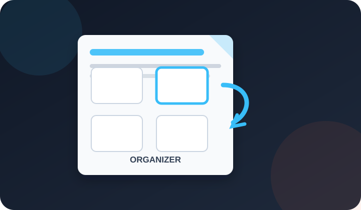

Drag pages into order, rotate or delete them, add blank pages or another PDF, then download one clean file.
Free · No sign-up · No watermark · Pages stay in your browser

Drag a page to move it. Click pages to select several, Shift-click for a range. Double-click a page to see it large. Nothing changes in your file until you download.
PDFdukan lets you organize PDF pages online for free: drag thumbnails to reorder pages, rotate or delete them, duplicate a page, add blank pages or pages from another PDF, then download one new file.
PDFdukan copies each original page instead of redrawing it, so text stays sharp and searchable and links still work.
Nothing changes until you download, and Undo steps back one move:
Select pages with a click or Shift-click, then rotate, duplicate or delete them all at once.
Add PDF puts another file's pages right after your selection, so you can combine and order in one pass.
Save selected as PDF exports just the chosen pages and keeps your full layout open.
Original order restores the first sequence; Reverse flips a back-to-front scan.
These limits apply to each session:
| Item | Details |
|---|---|
| Input | PDF files, up to 200 MB each |
| Pages | Up to 1,500 pages in one layout |
| Output | One PDF, or a PDF of selected pages |
| Rotation | 90° steps, per page or in a batch |
| Cost | Free, no sign-up, no watermark |
Rotate sideways pages before you move them, because upright thumbnails are easier to read. Double-click a page to check it full size when two pages look alike.
No. PDFdukan builds thumbnails with Mozilla's pdf.js and the new file with pdf-lib, both inside your browser tab. Your PDF is not sent to our server.
Bookmarks and fillable form fields are not kept. Password-locked or edit-restricted PDFs can't be copied. To change words, use our PDF editor.
Yes. PDFdukan's organizer is free with no account, no email and no watermark on the downloaded PDF.
Tap ↻ or ↺ under that page's thumbnail. Only that page turns, in 90° steps.
Yes. Tap Undo or press Ctrl+Z, and the page returns to its old place.
Yes. Tap Add PDF to bring in the second file, then drag pages from both files into one order. For merging whole files only, Merge PDF is quicker.
No. Pages are copied as they are, not turned into images. To shrink the file afterward, use Compress PDF.
Yes. Press and hold a thumbnail, then drag it. Rotate and delete buttons sit under each page.
Connect Google Drive to save selected outputs to your own Drive storage. Review the destination before uploading sensitive documents.
No account? Sign Up free